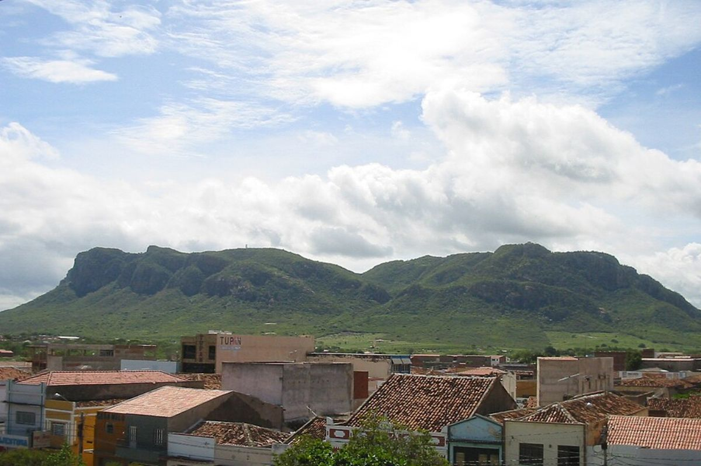
Monumento Natural
A Serra Talhada
Serra Talhada - Pernambuco
O principal símbolo histórico e cultural da cidade de Serra Talhada.
ExplorarEscolha um ponto para ver fotos e conhecer mais sobre o local.

Serra Talhada - Pernambuco
O principal símbolo histórico e cultural da cidade de Serra Talhada.
Explorar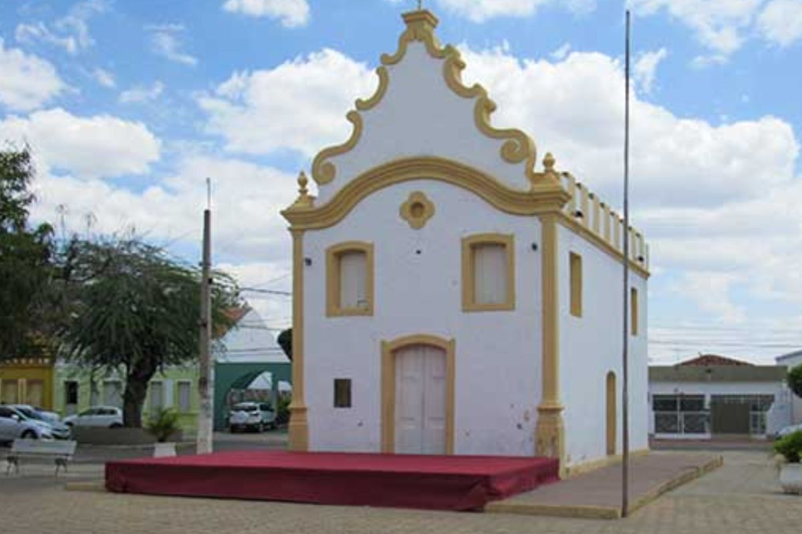
Serra Talhada - Pernambuco
Um dos templos religiosos mais tradicionais e históricos da cidade.
Explorar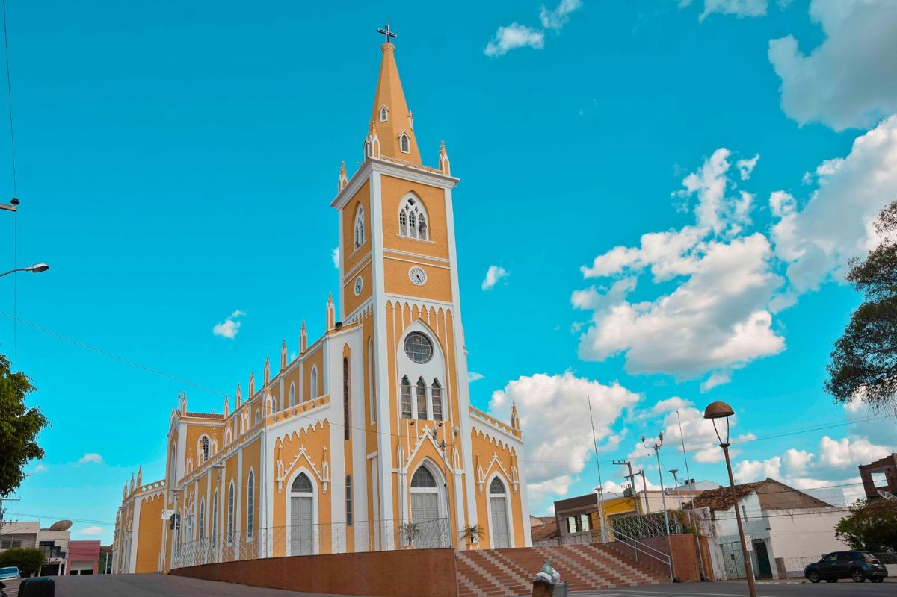
Serra Talhada - Pernambuco
Coração religioso e arquitetônico de Serra Talhada.
Explorar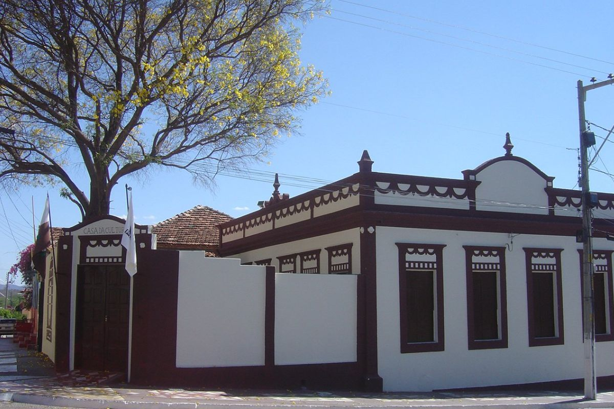
Serra Talhada - Pernambuco
Um espaço dedicado à cultura e às expressões da região.
Explorar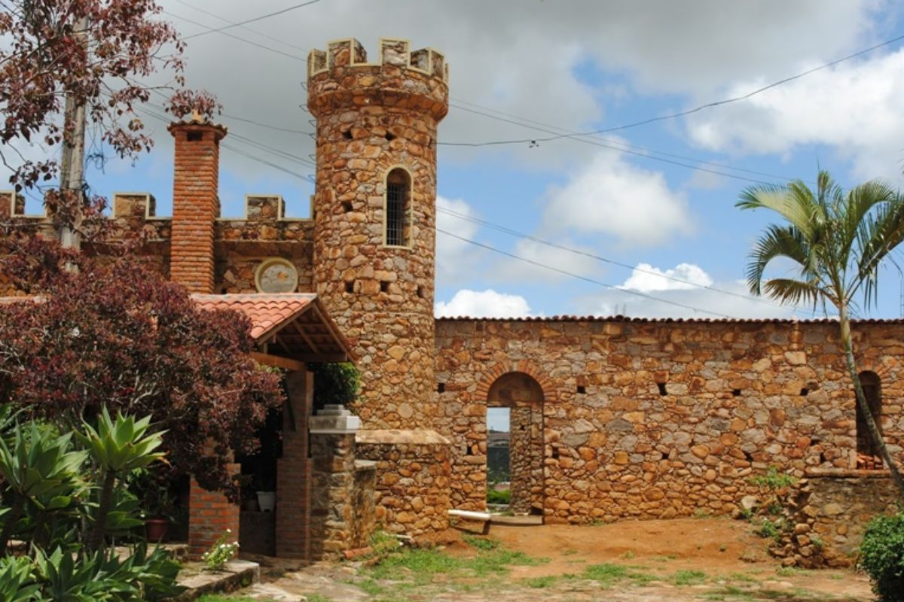
Sertão de Pernambuco
Uma construção histórica que integra o patrimônio arquitetônico sertanejo.
Explorar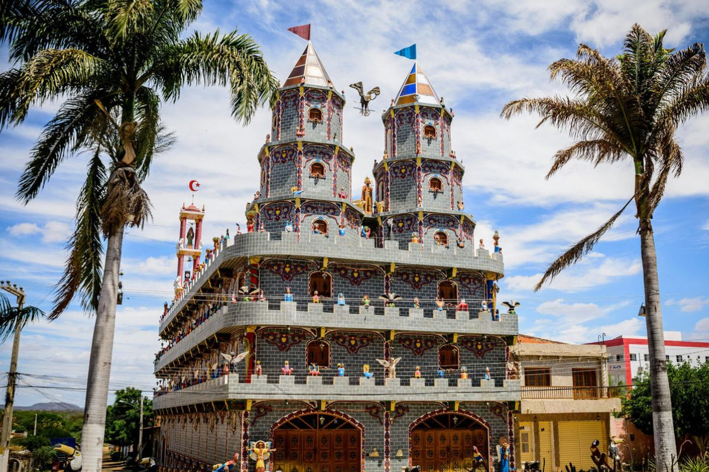
Sertão de Pernambuco
Arquitetura inspirada pela identidade artística e cultural nordestina.
Explorar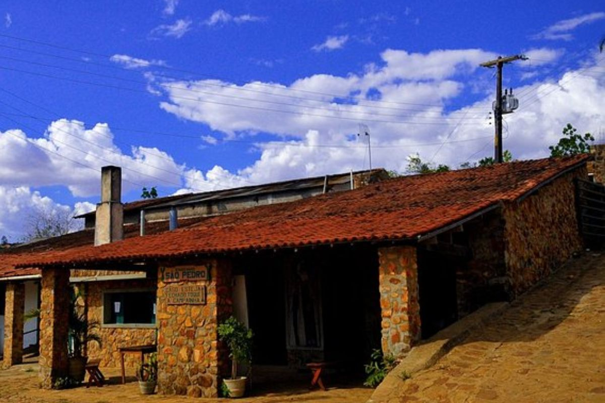
Sertão de Pernambuco
Um lugar ligado à memória e à formação histórica da região.
Explorar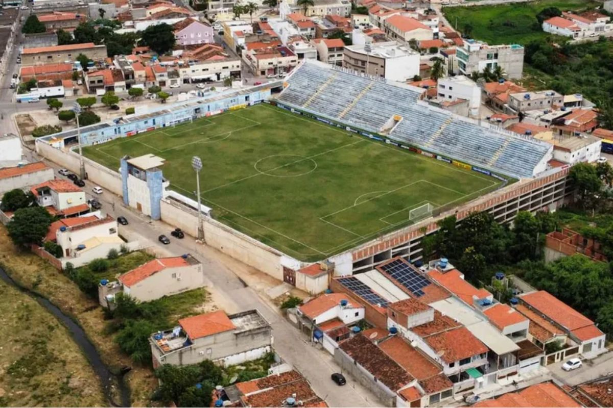
Sertão de Pernambuco
Um espaço de encontro para o esporte e a paixão pelo futebol.
Explorar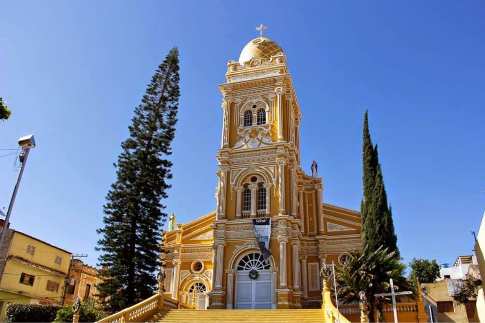
Sertão de Pernambuco
Arquitetura religiosa que marca a paisagem e a memória local.
Explorar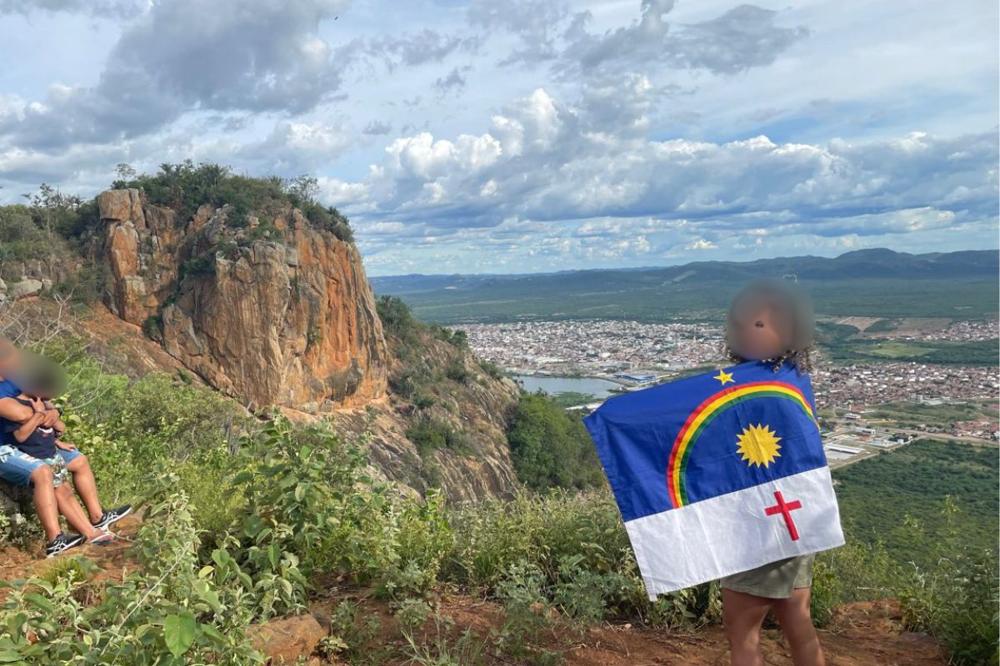
Serra Talhada - Pernambuco
Um ponto para contemplar a paisagem e os contornos da região.
Explorar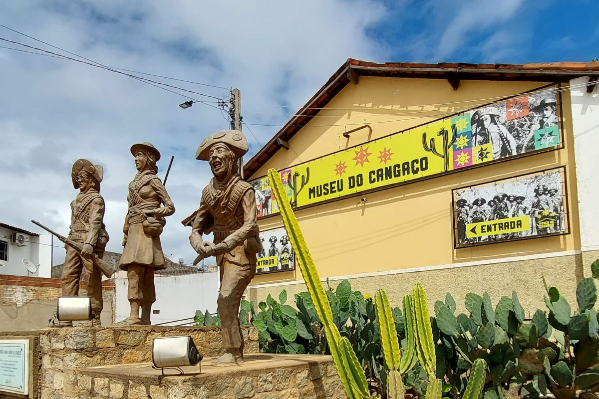
Serra Talhada - Pernambuco
Memórias e referências de um dos capítulos marcantes da história sertaneja.
Explorar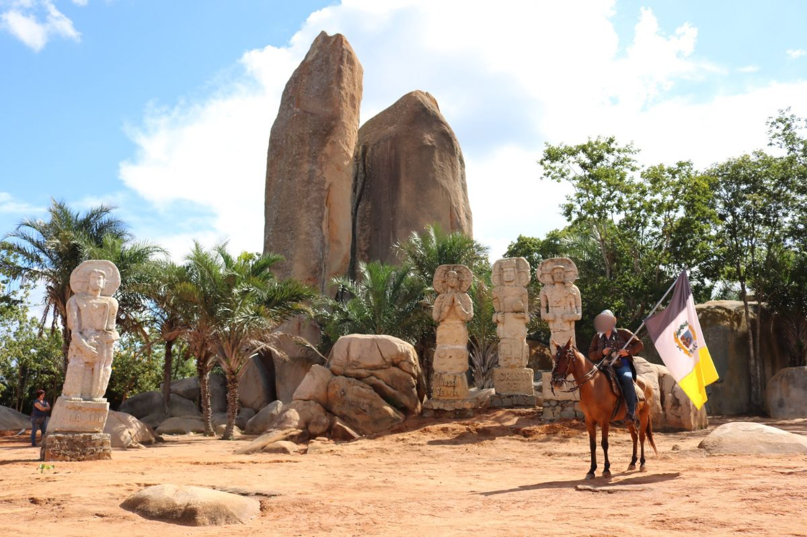
Sertão de Pernambuco
Uma paisagem sertaneja de grande presença e identidade regional.
Explorar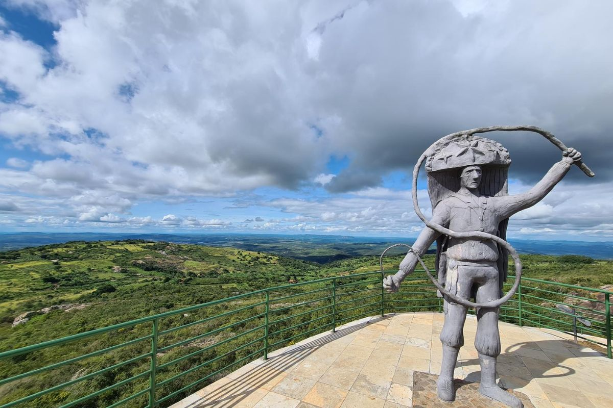
Sertão de Pernambuco
Um dos destaques naturais para quem aprecia as paisagens da região.
Explorar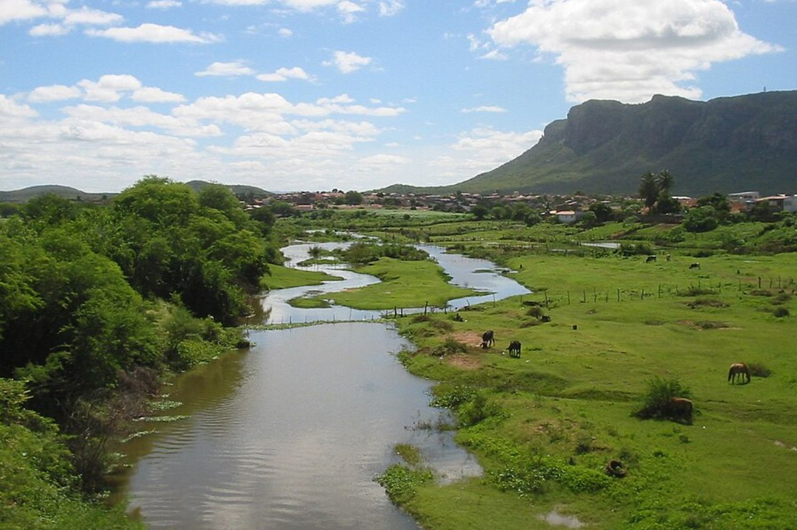
Sertão de Pernambuco
Um elemento importante da paisagem e da vida no Sertão.
Explorar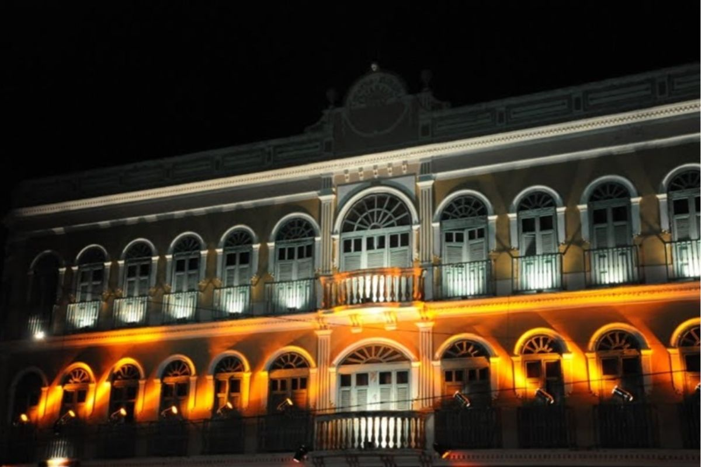
Sertão de Pernambuco
Um espaço cultural ligado às artes, ao cinema e à memória da cidade.
ExplorarSerra Talhada - Pernambuco
A serra que deu nome a Serra Talhada é o marco histórico e simbólico da cidade. Foi ao seu redor que surgiram as primeiras fazendas de criação que deram origem ao povoado, e sua aparência de paredão abrupto e “talhado” inspirou o nome do município.
Ao longo do tempo, serviu como referência para viajantes e cenário de importantes capítulos da cultura do sertão, incluindo o cangaço, já que a cidade é terra natal de Lampião.
Além de sua relevância histórica, a serra é um dos principais cartões-postais locais: imponente, com rochas expostas e rodeada pela vegetação da caatinga.
Ela representa a identidade, a memória e o orgulho do povo serra-talhadense.
The mountain that gave Serra Talhada its name is the city's main historical and symbolic landmark. It was around this formation that the first cattle farms appeared, giving rise to the early settlement.
Its abrupt, carved-like rocky walls inspired the name of the municipality. Over time, the mountain served as a reference point for travelers and as the backdrop for important cultural chapters of the sertão.
This includes the cangaço movement, since the city is the birthplace of Lampião.
Beyond its historical relevance, the mountain is one of the region’s most iconic landscapes, surrounded by caatinga vegetation and representing identity, memory and pride for the people of Serra Talhada.
Serra Talhada - Pernambuco
A Igreja do Rosário, em Serra Talhada (PE), é um dos templos religiosos mais tradicionais da cidade. Localizada no bairro do Rosário, ela se destaca pela arquitetura simples e histórica, típica das igrejas interioranas de Pernambuco.
O local é importante para a comunidade, especialmente por suas festividades religiosas, como a celebração em honra a Nossa Senhora do Rosário, que reúne fiéis e moradores.
The Igreja do Rosário in Serra Talhada, Pernambuco, is one of the city’s traditional religious landmarks. Located in the Rosário neighborhood, it features a simple, historic architectural style typical of small churches in the region.
It plays an important role in the local community, especially during religious festivities dedicated to Our Lady of the Rosary, which attract residents and visitors.
Serra Talhada - Pernambuco
A Igreja Matriz de Nossa Senhora da Penha é o coração religioso de Serra Talhada. Com sua arquitetura imponente, domina a praça central da cidade e serve como ponto de encontro para a comunidade.
Dedicada à padroeira da cidade, a igreja é palco das maiores celebrações religiosas da região, mantendo viva a tradição e a devoção do povo sertanejo.
The Mother Church of Our Lady of Penha is the religious heart of Serra Talhada. With its imposing architecture, it dominates the city's central square and serves as a meeting point for the community.
Dedicated to the city's patron saint, the church hosts the region's largest religious celebrations, keeping alive the tradition and devotion of the backlands people.
Serra Talhada - Pernambuco
A Fundação Casa da Cultura de Serra Talhada é um espaço cultural localizado no centro de Serra Talhada, que resgata e preserva a memória e a história do sertão do Pajeú, com destaque para personagens e fatos marcantes da região, especialmente ligados ao cangaço.
O local funciona em um prédio histórico bem cuidado, com um acervo de fotografias, esculturas e objetos (incluindo itens atribuídos a Lampião) que oferecem ao visitante uma imersão na identidade cultural e no passado da cidade.
Apesar de não ser um espaço muito grande, a Casa da Cultura é agradável e gratuita, tornando-se um ponto indicado tanto para quem busca conhecimento sobre a cultura nordestina quanto para curiosos sobre a vida e as tradições do sertão pernambucano.
The Fundação Casa da Cultura de Serra Talhada is a cultural space located in the center of Serra Talhada that preserves and highlights the memory and history of the Pajeú backlands, with special emphasis on notable figures and events of the region, particularly those related to the cangaço.
The site operates in a well-maintained historic building and features a collection of photographs, sculptures, and objects (including items attributed to Lampião) that offer visitors an immersive experience into the city’s cultural identity and past.
Although not a very large space, the Casa da Cultura is pleasant and free to visit, making it a recommended stop for those seeking knowledge about northeastern Brazilian culture as well as for anyone curious about the life and traditions of the Pernambuco hinterland.
Sertão de Pernambuco
A Casa Grande das Almas em Triunfo (PE) é um casarão histórico do século XIX, famoso por estar na divisa entre Pernambuco e Paraíba, o que permitia ao cangaceiro Lampião se esconder da polícia alternando entre os estados.
Construída pelo coronel João Timóteo, a propriedade virou museu, mantendo a estrutura original, móveis de época e um sótão onde Lampião jogava cartas, além de ter um castelo inacabado e um cemitério particular.
Casa Grande das Almas in Triunfo (PE) is a historic mansion from the 19th century, famous for being on the border between Pernambuco and Paraíba, which allowed the bandit Lampião to hide from the police by alternating between states.
Built by Colonel João Timóteo, the property became a museum, maintaining the original structure, period furniture, and an attic where Lampião played cards, as well as having an unfinished castle and a private cemetery.
Sertão de Pernambuco
Em São José do Belmonte ergue-se o Castelo Armorial, uma construção de mais de 15 metros de altura que funciona como museu dedicado à cultura sertaneja e ao Movimento Armorial, idealizado por Ariano Suassuna.
A obra combina elementos medievais, barrocos e mouriscos com referências ao imaginário nordestino. O interior abriga iluminogravuras de Ariano Suassuna, xilogravuras de J. Borges e memórias históricas da região.
O espaço funciona como síntese artística da cultura nordestina e celebra o artesanato, a música, a literatura e a tradição sertaneja.
In São José do Belmonte stands the Armorial Castle, a structure over 15 meters high that functions as a museum dedicated to backlands culture and the Armorial Movement, created by Ariano Suassuna.
The structure combines medieval, Baroque, and Moorish elements with references to Northeastern Brazilian folklore. Inside, it houses 'illuminogravuras' by Ariano Suassuna, woodcuts by J. Borges, and historical records.
The space serves as a visual synthesis of Northeastern Brazilian culture, celebrating craftsmanship, music, literature, and the traditions of the backlands.
Sertão de Pernambuco
O Engenho de São Pedro é um dos principais símbolos históricos e culturais de Triunfo, em Pernambuco, e hoje figura entre os lugares mais visitados por quem deseja conhecer a tradição da cachaça artesanal no Sertão do Pajeú.
O visitante acompanha desde a moagem da cana até a fermentação e a destilação nos tradicionais alambiques de cobre — tudo feito de forma artesanal, preservando técnicas que atravessam gerações.
O local mantém sua estrutura histórica, com moendas e galpões que ajudam a contar a trajetória da produção rural em Triunfo, oferecendo uma atmosfera tranquila e acolhedora.
The São Pedro Engenho is one of the main historical and cultural landmarks of Triunfo, Pernambuco, and today stands among the most visited places for those who want to experience the tradition of artisanal cachaça production in the Sertão do Pajeú.
Visitors can observe every step of the process — from grinding the sugarcane to fermentation and distillation in traditional copper stills — all crafted using techniques passed down through generations.
The site preserves its historic structure, with old mills and warehouses that help tell the story of rural production in Triunfo, offering a peaceful and welcoming atmosphere.
Sertão de Pernambuco
O Estádio Municipal Cornélio de Barros, mais conhecido como Salgueirão, é o estádio de futebol da cidade de Salgueiro, tradicional casa do Salgueiro Atlético Clube.
Inaugurado em 1972 e ampliado em 2012 para receber jogos da Série B, o estádio se tornou um símbolo do futebol no interior pernambucano, palco de jogos marcantes e campanhas fortes do time local.
The Municipal Stadium Cornélio de Barros, widely known as Salgueirão, is the football stadium of the city of Salgueiro and the traditional home of Salgueiro Atlético Clube.
Inaugurated in 1972 and expanded in 2012 to host Série B matches, the stadium became a symbol of football in the Pernambuco countryside, hosting memorable matches and strong campaigns by the local team.
Sertão de Pernambuco
A Igreja Matriz de Nossa Senhora das Dores em Triunfo, Pernambuco, é um importante patrimônio cultural e religioso, com um belo estilo eclético, notável campanário e grande escadaria.
Sendo a padroeira da cidade, a igreja é um marco turístico no alto da Serra da Baixa Verde, local de fé e devoção para os triunfenses, tombada como patrimônio histórico.
The Igreja Matriz de Nossa Senhora das Dores in Triunfo, Pernambuco, is an important cultural and religious heritage, with a beautiful eclectic style, notable bell tower, and large staircase.
As the patron saint of the city, the church is a tourist landmark at the top of the Serra da Baixa Verde, a place of faith and devotion for the people of Triunfo, listed as historical heritage.
Serra Talhada - Pernambuco
O Mirante Serra Talhada é um ponto de observação natural na zona rural de Serra Talhada (Pernambuco), conhecido por oferecer vistas panorâmicas da cidade, da serra e do sertão ao redor — ideal para fotos e contemplação da paisagem, especialmente no pôr do sol.
O acesso pode ser feito por estrada de terra e não há infraestrutura turística oficial, sendo recomendado ir com cuidado e, se possível, com alguém que conheça a região.
The Mirante Serra Talhada is a natural viewpoint located in the rural area of Serra Talhada, Pernambuco, Brazil. It’s known for its wide panoramic views of the city, surrounding hills, and the sertão landscape, making it a great spot for photos and sunset watching.
The road to the viewpoint is mostly dirt and there’s no official tourist infrastructure, so it’s recommended to go carefully and, if possible, with someone who knows the region.
Serra Talhada - Pernambuco
O Museu do Cangaço de Serra Talhada abriga o maior acervo do gênero no Brasil. Localizado na antiga estação ferroviária, o museu preserva objetos, fotos e documentos que contam a saga de Virgulino Ferreira da Silva, o Lampião.
A visita oferece uma perspectiva rica sobre o fenômeno social e cultural do cangaço, fundamental para entender a história do sertão nordestino.
The Cangaço Museum in Serra Talhada houses the largest collection of its kind in Brazil. Located in the old railway station, the museum preserves objects, photos, and documents that tell the saga of Virgulino Ferreira da Silva, known as Lampião.
The visit offers a rich perspective on the social and cultural phenomenon of cangaço, essential for understanding the history of the Brazilian backlands.
Sertão de Pernambuco
A Pedra do Reino, ou Pedra Bonita, é um conjunto de duas formações rochosas de cerca de 30 metros de altura, situadas em São José do Belmonte (PE). Tornou-se famosa pelo movimento messiânico sebastianista ocorrido entre 1836 e 1838.
O episódio inspirou diversas obras, como 'O Romance d'A Pedra do Reino' de Ariano Suassuna. Todo ano em maio, ocorre a Cavalgada à Pedra do Reino, celebração ligada à tradição armorial.
The Pedra do Reino, also known as Pedra Bonita, is a pair of rock formations about 30 meters tall, located in São José do Belmonte, Pernambuco. It became famous as the site of a Sebastianist messianic movement between 1836 and 1838.
The episode inspired several works, including Ariano Suassuna’s 'Romance d’A Pedra do Reino'. Every year in May, the Cavalgada to the Pedra do Reino takes place, a celebration linked to the Armorial tradition.
Sertão de Pernambuco
O Pico do Papagaio, situado em Triunfo, é um dos pontos mais altos de Pernambuco, alcançando cerca de 1.185 metros de altitude. Conhecido pela vista ampla do sertão, o local possui um mirante natural que permite observar vales e serras.
No topo, há também a estátua de um Careta, figura tradicional do carnaval triunfense. Graças ao clima ameno e ao cenário impressionante, é ideal para quem busca natureza e um pôr do sol marcante.
Pico do Papagaio, located in Triunfo, is one of the highest points in Pernambuco, reaching approximately 1,185 meters in altitude. Known for its expansive views of the Sertão region, the site boasts a natural viewpoint offering panoramic views.
At the summit, there is also a statue of a Careta, a traditional figure from the Triunfo carnival. Thanks to its milder climate and impressive scenery, it is ideal for those seeking nature and a striking sunset.
Sertão de Pernambuco
O Rio Pajeú nasce na serra da Balança, em Brejinho, e é um dos principais afluentes do rio São Francisco. É um rio sazonal que abastece 28 municípios do sertão pernambucano.
Famoso por inspirar canções como as de Luiz Gonzaga e obras literárias, o Pajeú é fundamental para a identidade cultural e econômica das cidades que banha, como Serra Talhada e Flores.
The Pajeú River originates in the Serra da Balança and is one of the main tributaries of the São Francisco River. It is a seasonal river that supplies 28 municipalities in the Pernambuco backlands.
Famous for inspiring songs by Luiz Gonzaga and literary works, the Pajeú is essential to the cultural and economic identity of the cities along its banks, such as Serra Talhada and Flores.
Sertão de Pernambuco
Ícone do audiovisual e das artes cênicas no interior do estado, o Cine Theatro Guarany, localizado na cidade de Triunfo, é uma das principais atrações turísticas do sertão pernambucano.
Construído em 1922, é uma edificação de grande porte que se destaca no conjunto urbano da cidade. É sede do Festival de Cinema de Triunfo e dispõe de uma programação regular de cinema e espetáculos.
A landmark of audiovisual and performing arts in the interior of the state, the Cine Theatro Guarany, located in the city of Triunfo, is one of the main tourist attractions of the Pernambuco hinterland.
Built in 1922, it is a large building that stands out in the city's urban landscape. It hosts the Triunfo Film Festival and has a regular program of films and performances.